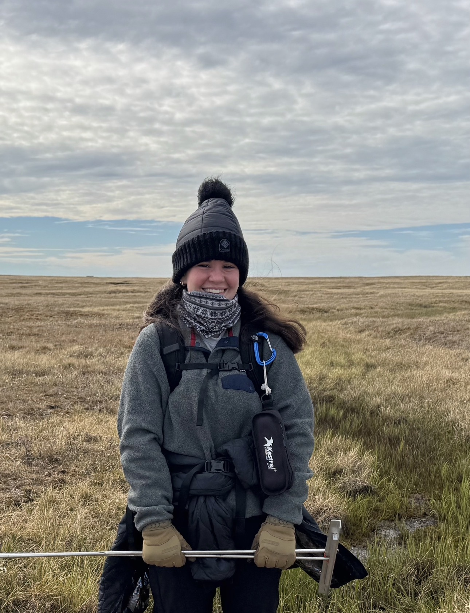
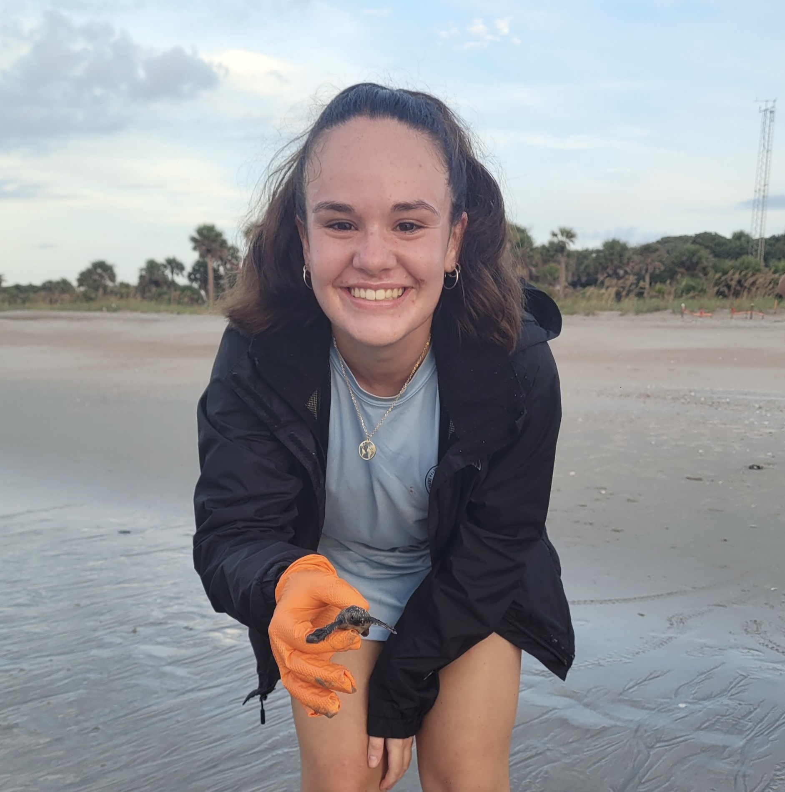
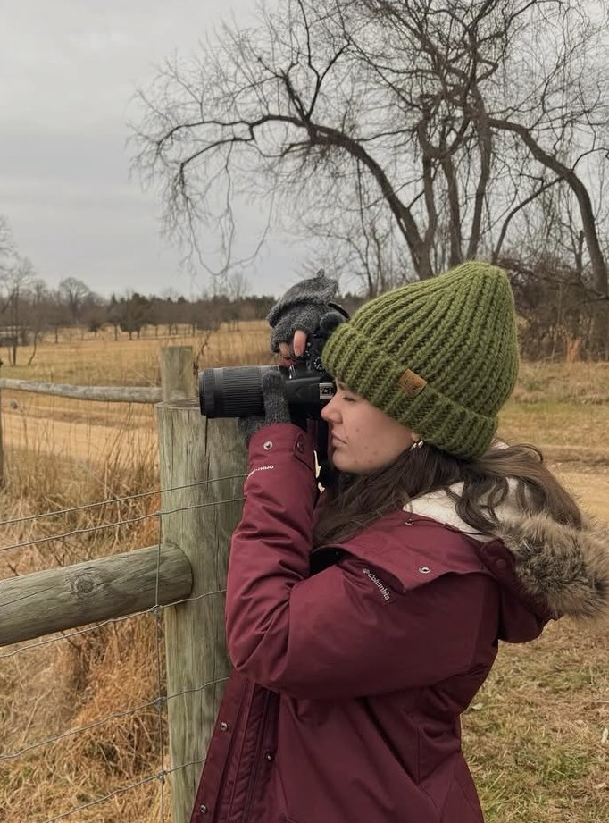

Home



About Me
Jaida Lamela Rhea
I am a graduate student at Clark University in Worcester, Massachusetts pursuing my M.S. in Climate and Society. I hold a B.A. in environmental science and professional writing and rhetoric from Goucher College in Baltimore, Maryland where I graduated in May 2025. I am particularly interested in coastal Arctic environments, and my current research interests encompass using near-surface remote sensing to advance understanding of high-Arctic tundra responses to climate change, permafrost dynamics, and the connection between coastal and marine environments. Beyond my research interests, I am passionate about science communication, and believe developing creative, effective, and accessible communication strategies have a very important role to play in bridging the gap between public understanding and scientific consensus. p { margin-bottom: 12px; } In my free time, you can catch me playing pick-up soccer, taking wildlife photos with my Nikon D3500, reading (two of my favorite authors are Peter Wohlleben and Richard Powers), embarking on questionable hikes with my brother, or running around with my border collie bodhi and cats wren and birdie!